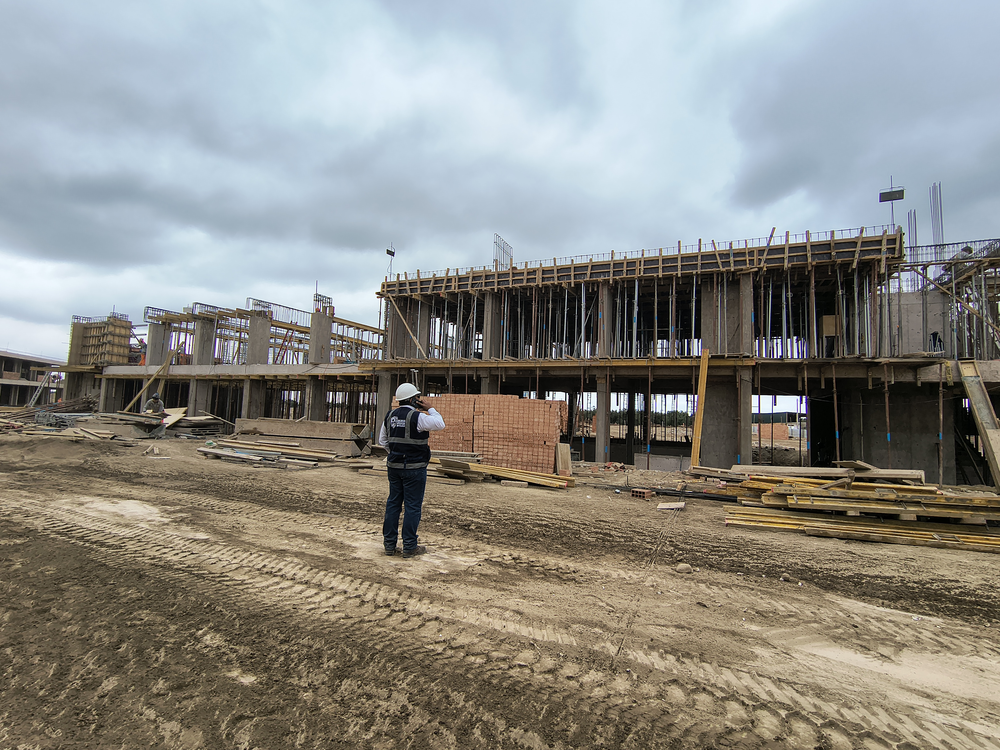

QUIENES SOMOS
InnovaSync S.A.C. es una empresa peruana que integra arquitectura, supervisión de obras y proyectos de inversión publica y privada.
Trabajamos para que cada proyecto tenga el mejor diseño y dimensión, se construya bien y se entregue a tiempo.
QUE HACEMOS
Diseño arquitectónico
Anteproyectos, planos y expedientes técnicos.
Supervisión de obras
Control de calidad, plazos y costos.
Proyectos de inversión
Formulación, evaluación y cronograma.